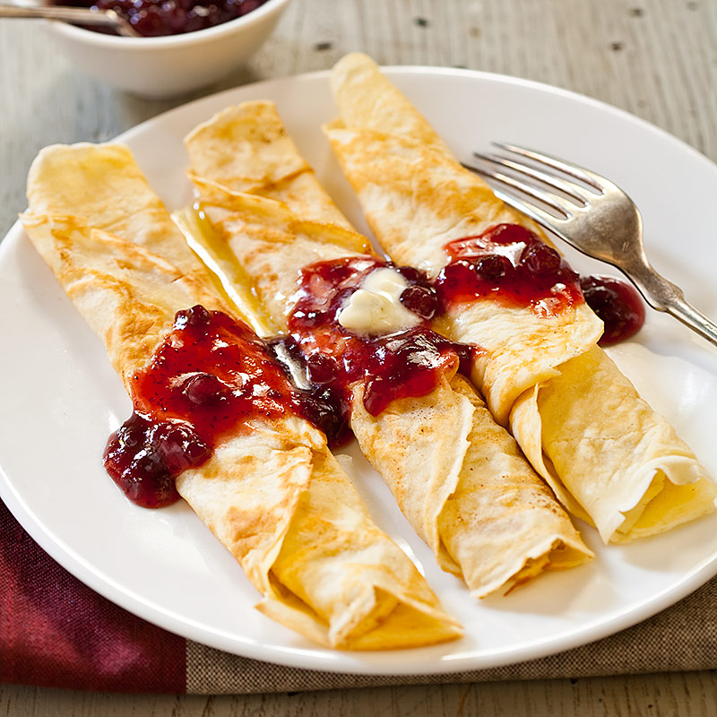

- Meals: 4 servings
- Preparation time: 30 min
Ingredients
- 1 pound ground beef
- 1/4 cup panko bread crumbs
- 1 tablespoon parsley, chopped
- 1/4 teaspoon ground allspice
- 1/4 teaspoon ground nutmeg
- 1/4 cup onion, finely chopped
- 1/2 teaspoon Garlic Powder
- 1/8 teaspoon Pepper
- 1/2 teaspoon salt
- 1 egg
- 1 tablespoon olive oil
- 5 tablespoon butter
- 3 tablespoon flour
- 2 cups beef broth
- 1 cup heavy cream
- 1 tablespoon Worcestershire sauce
- 1 teaspoon Dijon mustard
- salt and pepper to taste
Instructions
-
In a medium sized bowl combine ground beef,
panko, parsley, allspice, nutmeg, onion, garlic powder, pepper, salt and egg.
Mix until combined.
-
Roll into 12 large meatballs or 20 small meatballs.
In a large skillet heat olive oil and 1 Tablespoon butter.
Add the meatballs and cook turning continuously until brown on each side and cooked throughout.
Transfer to a plate and cover with foil.
-
Add 4 Tablespoons butter and flour to skillet and whisk until it turns brown.
Slowly stir in beef broth and heavy cream.
Add worchestershire sauce and dijon mustard and bring to a simmer until sauce starts to thicken.
Salt and pepper to taste.
-
Add the meatballs back to the skillet and simmer for another 1-2 minutes.
Serve over egg noodles or rice.
Other recipes we recommend
Delicious Swedish Pancakes
